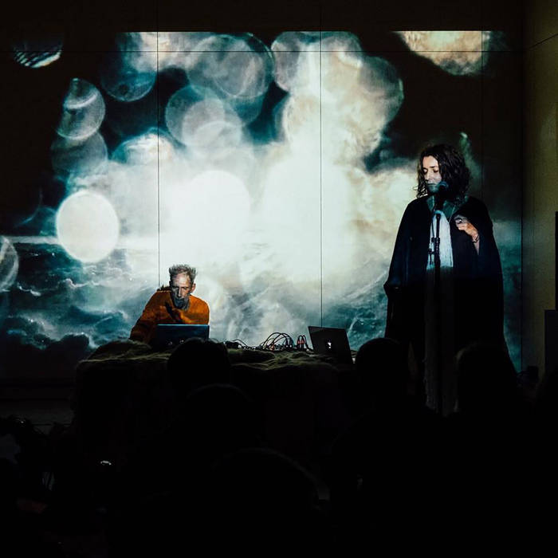
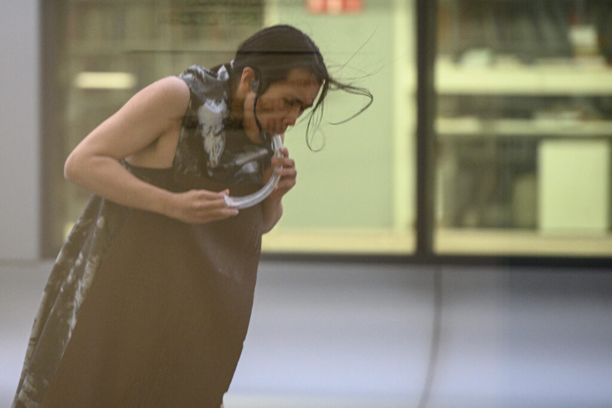

- Doors open at 19.00 ⦁ Performances start at 19.30
Route ⦁ OCCII ⦁ Amstelveenseweg 134, 1075 XL Amsterdam
In The Diluted Hours, Magali Daniaux & Cédric Pigot take us on a poetic investigation of the Arctic in which the immemorial time of the glaciers meets the radical time of a ritual fire. In their multimedia performance, sounds of prepared guitar and manipulated objects fuse with electronic loops and Magali’s incantatory voice: calling to the stars, to nature and animals, to human beings and their bodies.

What kind of value negotiation occurs in a subcultural space? How fluid is the role of a stakeholder under such conditions? Virginities is a performance situation by Ivan Cheng which addresses the way authenticity is constructed. In the last years, he has been developing a practice using an inhaling scream and mixing microphone feedback. Enmeshing this tool with new texts, he negotiates a suspicion for bodily modes of subsuming and consuming.

About the artists
Ivan Cheng focuses, within his practice, on misunderstanding, abrasion, and desire in the act of reading. Cheng makes work that is largely context-specific, with performative situations that are largely ephemeral and intended to be held by hearsay and revisionism. Interested in the deconstructed gesamtkunstwerk and the visible and invisible infrastructures that could distribute it, he works with his own trained and historied performing body, and embeds the identities of other performers and non-performers in the work through rehearsal, dialogue, and entrustment. He also works as a performer, clarinetist, curator, and writer, initiating project space bologna.cc. http://ivancheng.com/
Since they met in 2001, the joint work of Magali Daniaux & Cédric Pigot bears the dual hallmark of experimentation and performance. Their pieces bring together various media, associating elements from opposite ranges, with a taste for connections between Sci-Fi and documentary forms, high-tech engineering and fantasy tales, heavyweight materials, and fleeting sensations. Starting with installations and objects, their work soon included experimental actions and more immaterial artistic gestures. Videos, sound art, music, poetry, olfactive research, virtual works bordering the digital arts have formed, over the past years, a cycle of works dealing with climate change, economic, political, and geo-strategic issues, urban development and food management. daniauxpigot.com